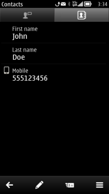

Always-editable forms
In case the View state is not useful, the form can be specified as Edit-state only. In such a scenario, the user can edit the fields right away when entering the form, and accepting the form returns into a state outside the form instead of the View state.

Figure: Form in the View state

Figure: Form in the Edit state